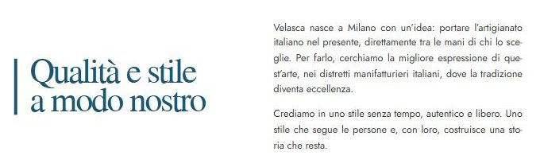
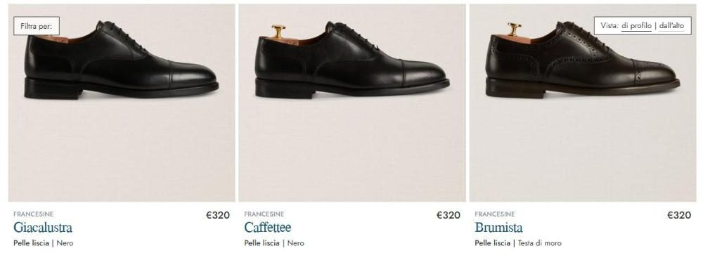

Velasca: a Milan brand with Milan hidden in the shoe names.
Velasca has everything a direct-to-consumer brand wishes it had: named workshops, a real district, more than twenty shops, a playful voice and shoes named in Milanese dialect. The homepage says “Made in Italy” — like everyone else.
Reviewed 26 September 2026 · Scope: homepage, Chi siamo (About), the shops page, the lace-up collection and a product page at it.velasca.com, compared with three direct competitors. Public material only: no interviews, no data, nothing internal. Velasca's Italian site is quoted in the original with my English translation in brackets.
This is speculative work, not a client relationship
I picked Velasca and this gap on my own initiative — no engagement, no affiliation, nothing commissioned, nothing beyond what's public on their site. It exists to show how I'd approach a Positioning Audit, not to claim I was hired for one. If Velasca would rather this page not exist, email me and it comes down.
Velasca owns five things no competitor can copy, and leads with the one thing every competitor says.
It was born in Milan to sell Italian craft directly, without the usual chain in between. It works with family workshops in Montegranaro, Italy's oldest shoemaking district. It has more than twenty “botteghe” it calls home. Its shoes carry Milanese dialect names. And its newsletter writes like a friend with a sense of humour. The homepage, in words, says: artisan manufacturing, Made in Italy, drop by the shop. That is the category's entry ticket, not a reason to choose.
Where the brand stands today, in four categories.
Product & proof
Differentiation (as said)
Voice consistency
Story reaching the buyer
The product page shows 4.5 stars from 1,229 reviews and names the town where the shoe is made. The substance is there. What's missing is a headline that says what only Velasca can say.
A beautiful homepage that says “Made in Italy.”
The homepage is almost entirely photography. The words a visitor actually reads are the page title, “Lo stile italiano fatto per durare” (“Italian style made to last”), and two tiles: “Manifattura artigianale Made in Italy” (“Artisan manufacturing, Made in Italy”) and “Fai un salto — In bottega” (“Drop by — in the shop”). Each is true. None is specific to Velasca: “Made in Italy,” “artisanal” and “timeless” are what every Italian-made menswear brand says, including the competitors below.
Photography can carry mood; it can't carry an argument. A first-time visitor leaves the homepage knowing Velasca makes good-looking Italian shoes and clothes — and not knowing why they should buy them here rather than from the next Italian brand.
Five assets, all published, none on the homepage.

A founding idea
“Velasca nasce a Milano con un’idea: portare l’artigianato italiano nel presente, direttamente tra le mani di chi lo sceglie.” (“Velasca was born in Milan with one idea: to bring Italian craftsmanship into the present, directly into the hands of the people who choose it.”) “Directly” is the whole business model — Italian workshops, no chain of intermediaries — and it appears once, on the About page.
A real place and real people
The shoes come “dal più antico distretto calzaturiero d’Italia: Montegranaro, nelle Marche” (“from Italy's oldest shoemaking district: Montegranaro, in the Marche”). The workshops are small, often family-run, where “il mestiere non si insegna solamente, ma si tramanda” (“the craft isn't just taught, it's handed down”). The product page confirms it: “Fatto a: Montegranaro (Fermo – Marche)” (“Made in: Montegranaro (Fermo, Marche)”). Named fabric partners follow on the About page — Thomas Mason for shirting, Vitale Barberis Canonico for suiting.
Shops that feel like home
More than twenty “botteghe,” from five in Milan to Paris and Munich, described as places for a chat and a hello: “Noi la chiamiamo casa” (“We call it home”). The homepage tile reduces this to “drop by the shop.”
Milan in the names
The lace-ups are called Giacalustra, Caffettee, Brumista, Cavadent — Milanese dialect, several of them old city trades (the brumista was the coachman, the cavadent the tooth-puller). It's a charming, ownable detail. Nowhere on the collection or product page is it explained.

A voice with a smile
The newsletter sign-up says “Comincia subito a divertirti, con stile.” (“Start having fun right away, in style.”) The confirmation promises “Sarà come andare sulla Luna restando in un paio di scarpe.” (“It'll be like going to the Moon without leaving a pair of shoes.”) That's a distinct, likeable voice — and it lives in form messages, while the brand pages speak in heritage and timelessness.
“Made in Italy” is the entry ticket. The story is the product.
| Brand | Lead message | Proof on the page | Who it's for |
|---|---|---|---|
| Velasca | Italian style made to last; artisan manufacturing, Made in Italy. | 4.5 stars from 1,229 reviews, 20+ shops, named district and mills | Men (with a separate women's site), in shop and online |
| Scarosso | “The best of Made in Italy quality meets style!” | Online shop, Made in Italy claim | Men and women, online |
| Suitsupply | Made-to-measure and personalised suits — “Don't just fit in, find your own perfect fit.” | Italian fabrics, in-store alterations, custom programme | Men, stores and online |
| Bexley | Men's shoes and clothes, by category. | Customer reviews on the homepage | Men, online and stores |
Suitsupply owns fit. Scarosso says “Made in Italy” louder. Bexley sells the catalogue. Nobody in the scan owns where and who — a named town, named workshops, a city identity. Velasca has all three on its About page. It is the only one of the four that could lead with Milan and Montegranaro and be telling the truth.
Competitor lines are quoted or summarised from their homepages and homepage descriptions as published on 26 September 2026.
Who buys, and what tips them.
The first-time online buyer
Finds a €320 oxford and hesitates: is it worth it next to a department-store brand? The answer — made in Montegranaro, sold directly — is on another page. The product page's “Fatto a” line is the right instinct; it needs a sentence of why.
The shop visitor
Walks into a bottega and gets the “home” experience the About page describes. The site should send them there with that promise, not with a store locator alone.
The Milanese and the visitor to Milan
A dialect name is a small joy for someone from Milan and a souvenir for someone who isn't. Both would enjoy knowing what “Brumista” means. Neither is told.
What the brand could say instead.
A draft built only from Velasca's own published words — the positioning a paid engagement would pressure-test, not a finished answer.
Draft positioning
“Made in Montegranaro. Sold in Milan's way — directly, and with a smile.”
It names the place instead of the country, keeps the founding idea (directly), and lets the voice that already exists in the newsletter into the headline.
Message order
Where: Montegranaro and the family workshops. How: directly from them to you, in shop or online. Who we are: a Milan brand — which is why the shoes carry Milanese names. Proof: 1,229 reviews, 20+ botteghe.
Name cards
One line per product: “Brumista — the Milanese coachman. Semi-brogue in calf leather, made in Montegranaro.” It costs nothing to produce, makes every product page more memorable, and turns the catalogue into a small guide to the city.
If this were a paid engagement, it would start here.
This week
- Add one line under the homepage hero: made in Montegranaro, sold directly.
- Explain each dialect name in one sentence on its product page.
- Move the founding sentence from the About page to the homepage.
This month
- Rewrite the “In bottega” tile around “We call it home” and the shop experience.
- Let the newsletter's voice into product and collection copy — one smile per page, not a joke per line.
- Put the review score on collection pages, not only product pages.
This quarter
- Build a “Montegranaro” page: the district, the workshops, the people, as far as they want to be named.
- Give the Società Benefit status and the impact report a line on the About page instead of only the footer.
- Test the Milan-names angle in one campaign and measure product-page time and conversion.
What this spec version leaves out: a paid Positioning Audit adds a working session with the team, access to analytics and sales data by channel, and customer interviews. None of that happened here. The direction above is a first draft from public material, meant to be argued with.

Want this kind of read on your own brand?
€1,200 · 1 week · no obligation beyond the audit itself